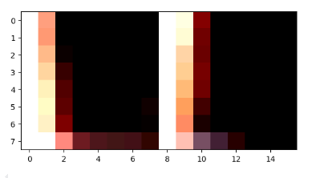
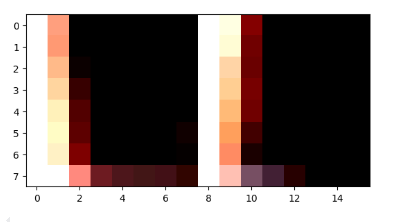

Recovering Homographies
Approach
For computing the homography matrix, I took advantage of numpys's least squares solver, by solving the minimum norm solution of a system of equations created from corresponding key points in the images, selected by the same correspondence tool used in project 3 here: https://cal-cs180.github.io/fa23/hw/proj3/tool.html
For N coordinates in the images, we create a system of equations, and stack them to solve Ah = b where
 is the homography matrix, and
is the homography matrix, and
 is matrix of coefficients of the equations,
and b is the vector of known values. We solve the system of equations using np.linalg.lstsq.
The homography matrix H is then reshaped to a 3x3 matrix, and the inverse of the matrix is returned.
is matrix of coefficients of the equations,
and b is the vector of known values. We solve the system of equations using np.linalg.lstsq.
The homography matrix H is then reshaped to a 3x3 matrix, and the inverse of the matrix is returned.
Results

Evans Hall Left
Evans Hall Right
Warping Images
Approach
To warp images, we multiply each point by the homography matrix and then scaling, iterating on every single pixel. Some calculations were made to allocate enough space in the image to fit the warped image.

Results


 
